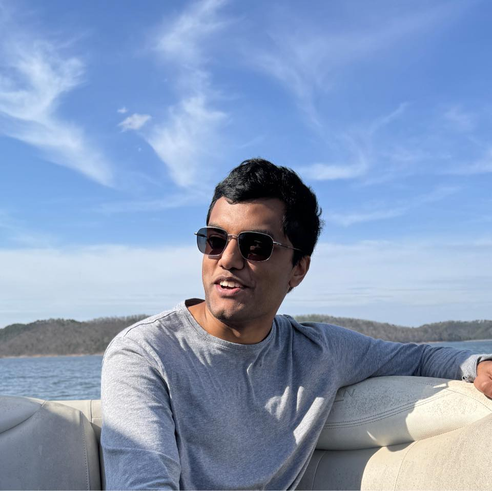

Vidith Madhu
Portfolio | Qualifications | Service
Here are some of my involvements:
- Competitor in TAMU ICPC teams
- Officer of TAMU ACPC
- Incoming software intern @ Amazon
- Multi-time hackathon winner
- Undergraduate researcher
- Discrete math enthusiast
Portfolio
Go to top- COVID-19 geolocation contact tracing webapp
- Music analyzer Chromium extension
- Full-stack messaging webapp
- FTC robotics event scouting app
You can follow my progress on my GitHub
Also be sure to check out my LinkedIn
Qualifications
Go to topMy skills include:
- Languages: C++, Python, Java, JavaScript, Rust
- Technologies: NodeJS, Django, Flask
I am interested in further exploring machine learning, blockchain, and Web3. Machine learning is the only one of these domains where I have some prior experience (albeit limited). I am drawn towards it mainly due to the need to massively transform and process data with fast algorithms. I am also fascinated with the applications of linear algebra and how it can be used to generalize wide varieties of datasets. While I haven't really worked with blockchain, the P2P structure of the entire network and the clever tricks needed to make it work (like proof-of-work schemes) amaze me.
Service
Go to topIn the future, I hope to serve the competitive programming community through activities such as problemsetting and event organization. Many large tech companies host their own annual programming competitions (like Facebook Hacker Cup and Google Code Jam). If I one day end up working at these companies, it would be a great honor to work behind-the-scenes to make these competitions possible!
